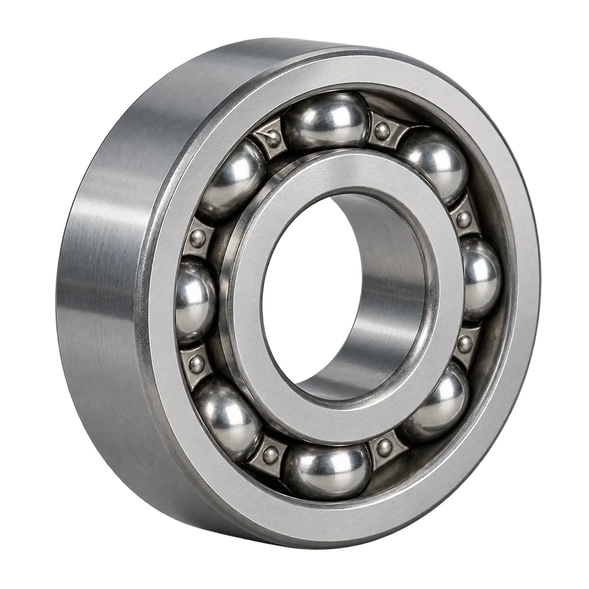

工业智能语义基座
让算法给出结论时， 工程师仍看得见证据、留得住判断。
从轴承质量分析场景出发，连接工业数据、业务知识与 AI 应用，支撑质量分析、假设推演和数据处理。
一 平台背景
让分散的工业数据，形成可理解、可关联的业务基础
工业数据分散在不同系统中，同一设备、工单或产品的记录往往名称不同、口径不一，业务知识也难以直接用于分析。
工业智能语义基座连接这些数据，统一业务对象及其关系，为数据处理、质量分析和假设推演提供共同依据。
三个产品域，连接数据与业务
多模态集成
接入与整理分散数据
本体管理
统一对象、属性与关系
本体智能
基于业务关系开展分析与推演
从数据准备，到质量分析，再到方案比较。
以轴承质量异常排查为例，三个应用分别支持数据准备、异常分析和复检假设比较。
准备数据
AI 管道
清洗、转换并关联分散记录
分析异常
质量 Agent
计算指标、核对来源、整理报告
比较假设
沙盘推演
调整规则，查看复检范围的变化
- 业务价值
- 覆盖数据准备、异常核对与复检比较中的人工负担。
- 数据条件
- 生产与质检记录可围绕同一批业务对象关联、核对。
- 实现范围
- 先支持数据处理与分析比较，关键修改和方案采纳由工程师确认。
二 我的贡献
把业务需求推进为
可评审、
可落地的
产品方案
围绕数据处理、质量分析与沙盘推演三个模块，梳理用户需要完成的业务任务，将需求转化为具体流程和交付要求。重点关注哪些工作适合交给AI、哪些关键步骤需要人工确认，以及结果如何核对，并通过方案评审推动流程完善与实现。
下方三个案例，分别展开这些判断如何落到数据处理、质量分析和假设推演中。
三 AI 管道
把处理需求转成可检查的流程，再交给系统执行。
具体问题
分散的生产与质检记录，需要经过合并、关联和字段转换，才能用于后续分析。人工配置要求操作者同时理解业务要求和数据结构，再把处理需求逐项落实成规则。
先理解业务与数据
业务需求
业务目标 · 处理规则
数据结构
数据表 · 字段关系
再逐项填写与检查
结合
同结构分片
合并方式
连接
关联表
关联字段
转换
目标字段
转换规则
为什么引入 AI
传统工具可以执行规则，但业务人员仍要把需求翻译成配置。AI 辅助起草的价值，在于结合所选数据与处理要求形成方案，让用户从逐项配置转向审阅和修正。
AI 辅助生成方案，关键操作由人掌握
流程演示
从数据整理到运行核对，完整展示方案如何形成与执行
合并两份质检记录，关联生产信息，再完成温度换算；通过方案预览、SQL 修改与运行核对，展示工程师如何掌握处理过程。
视频使用专用合成样本展示温度换算及小数位调整，未写入企业数据。
关键决策一
先看清方案如何改变数据，再决定是否执行
两个关键设计
方案先预览，再应用
结合所选数据与处理要求形成方案，先预览处理规则和画布变化，确认后再应用到节点。选中合适节点后自动匹配结合或连接操作，并显示相应规则；待确认操作以虚线预览，与已应用节点区分。
可精确修正，执行单独确认
在节点内调整 SQL，通过预览核对修改。应用更新节点，保存记录方案，运行另行校验与确认，让方案修改与实际执行保持清晰边界。
关键决策二
让 SQL 可核对，保留精确修正入口
自然语言适合表达处理要求；对能够阅读 SQL 的用户，节点内的编辑入口保留精确修正能力，避免为调整一个字段或小数位反复改写问题。
用户可以在画布节点内直接修改 SQL，并通过预览核对调整。修改先应用到节点，保存方案后，再单独发起运行。
同一次合成样本演示 · 对照节点 SQL 修改前后，再核对运行输出。
修改前：保留 2 位小数
84.5 秒 · 修改前的节点 SQL，精度参数为 2。
ROUND(temperature_c * 1.8 + 32, 2)修改后：保留 1 位小数
89 秒 · 修改已应用到节点；保存与运行仍是独立操作。
ROUND(temperature_c * 1.8 + 32, 1)运行后核对输出
836.27°C → 1537.3°F
四 质量 Agent
核对分析依据，继续追问和排查
具体问题
轴承出现质量异常后，相关的生产记录和质检结果分散在不同系统。异常发生在哪些对象上、对应哪些生产与检测记录，缺少集中、连贯的排查依据。
需要排查的轴承 · AI 示意

BRG-QH-2026-00061
硬度 65.2 HRC
MES 生产记录
MES-HEAT-00061
- 轴承编号
- BRG-QH-2026-00061
- 批次
- PB-2026-007
- 设备
- EQ-007
- 温度
- 862°C
QMS 质检记录
QMS-HRC-00061
- 轴承编号
- BRG-QH-2026-00061
- 批次
- PB-2026-007
- 硬度
- 65.2 HRC
核对已有来源时，检查 MES／QMS 记录是否对应同一轴承与生产批次，再核对检测时间、硬度标尺、适用规格及热处理记录，区分初检和复检；记录不一致或证据不足时，由工程师进一步核实。
设计目标
01 将分散记录和指标组织到同一排查问题中， 减少跨来源的人工串联 02 保持追问所需的上下文，让工程师能从 已有分析继续核对和排查
为什么引入 AI
传统查询和报表已经能呈现记录与指标，但工程师仍要把不同来源的线索串起来，解释它们与当前异常的关系，并为下一轮排查组织问题。增加查询页或筛选项，仍把语义理解和上下文组织留给人。
我的判断
我的判断是，AI Agent 的语言理解与上下文组织能力适合承接这部分工作：围绕当前问题解释已有事实，连续回应追问，预期减少人工拼接信息和反复补充背景的工作。统计数值仍由程序计算；解释必须有可核对的来源，原因假设仍由工程师核实。
人、模型与程序如何协作
从发现异常，到核对依据，再到生成报告
以轴承硬度异常排查为例，展示工程师如何查看分析结果、核对生产与质检记录，通过追问理解异常线索，并生成质量报告。
注：演示使用合成数据。
此次本地演示不作为企业生产环境的测试、效果验证或业务收益证明。
关键决策一
结构化内容契约组织可核对的报告
将分析结果按固定章节组织，通过目录定位结论、指标与原因假设，并保留对应的来源入口，帮助工程师逐项阅读、核对依据。
ContentBlock
统一承载结构，保留明确引用
将分析报告组织成清晰的章节、指标和表格，让工程师能按目录定位信息、对照分析依据。
结构示意，数值沿用原报告片段。
关键决策二
计算结果与 AI 解释分开呈现
工程师需要分清哪些是计算得到的事实，哪些是仍需核实的解释。因此，指标与判异结果独立呈现，AI 的原因分析明确标为待核实假设；生成报告时汇总已有结果并保留来源，避免把推测写成确定结论。
能力指数仅作描述性估计，不用于过程能力判定
怎样判断质量Agent可用
可用标准不只是“能回答”，而是回答对象正确、数值准确、来源可查、结论不过界。验收围绕四类问题展开：
- 范围：
- 是否分析了指定批次和对象，遇到不支持的筛选会不会擅自扩大范围
- 一致性：
- 图表、报告和来源记录是否使用同一份数据
- 结论边界：
- 能否区分异常关联与根因，依据不足时是否明确说明
- 失败处理：
- 查询无效、模型失败或任务取消后，是否避免用错误结果覆盖有效结果
五 沙盘推演
在独立空间设置假设，按规则比较方案
具体问题
质量分析能够帮助工程师发现异常，但接下来采用什么处理办法，还需要验证。例如，调整判定条件后，哪些检测记录会被重新分类，哪些保持不变？
只看分析报告，无法直接看到这些结果。因此，需要一个沙盘，让工程师组织相关对象、设置假设和规则，先试运行，再判断方案是否符合预期。
为什么引入 AI
工程师能够描述处理要求，却未必熟悉如何把要求配置成条件和动作。引入 AI 辅助形成方案，是为了降低这一步的表达与配置门槛。方案先交给用户检查和修正，确认后再运行；字段校验与规则执行由程序完成。
我的判断
沙盘应当承接“发现问题之后，验证下一步处理办法”的任务。用户不仅需要方便地编写方案，还需要明确修改哪些对象、观察哪些结果，并在运行后看清具体变化。因此，我把推演组织成“明确范围—设置假设—审阅规则—运行比较—回看依据”的连续过程。
设计目标
帮助工程师在实际处理前，验证一套规则会如何改变相关记录。用户可以在不改动真实数据的情况下检查结果，调整方案，并保留每次推演的配置和执行依据，为后续判断提供参考。
人机协作设计
设计中，用户决定假设、采纳方案并确认运行；模型辅助理解与解释，程序负责校验、计算和记录。
流程演示
从对象探索到结果追溯
添加对象、设置假设并审阅步骤计划，确认仿真后核对变化，再回看完整记录与历史。
本地交互演示 · 4 分 44 秒 · 阿泽配音
关键决策一
分开修改对象与对比对象
推演中，需要调整属性的对象与需要观察结果的对象并不总是相同。因此，将“设置假设值”和“设置对比对象”分开：前者明确改变什么，后者明确检查谁的变化，两者可以重合。
这样，用户在运行前就能确定本次推演的范围，运行后也能区分哪些对象发生变化、哪些保持不变。
关键决策二
规则先审阅，再执行
手动配置与自然语言提供两种规则编写入口，最终汇入同一份执行计划。自然语言描述先形成可审阅的提议，用户核对对象、触发条件和执行动作，确认加入计划后，再主动启动仿真。
通过分开“编写方案”和“执行规则”，降低配置门槛，同时保留检查与修正的机会。
当前本地演示通过规则解析处理自然语言；模型辅助理解与解释是协作设计方向。
关键决策三
变化可见，依据可追溯
将“假设已应用”和“仿真后变化”区分呈现，通过节点标识与简短前后值，让用户直接在画布上看清当前阶段和变化。完整记录先展示结果，再提供假设、条件与执行原因；运行前后画布采用一致构图，并标出变化位置。
每次推演独立留存，便于回看当时的配置与结果，而不受后续修改影响。
六 结果与反思
交付：让设计判断有可核对的依据
我与产品、算法和研发协作，将数据处理、质量分析和假设推演推进为产品方案。管道以合成样本核对温度换算和小数位修改是否体现在输出中；质量分析通过报告和视频呈现来源核对与连续追问；沙盘明确规则起草、编辑和运行的衔接。
成长：先判断 AI 要承担哪部分工作
我的关注点从操作是否顺畅，延伸到业务问题是否需要 AI：现有工具已能完成什么，人工还承担哪些转换与组织工作。质量分析需要在限定范围内选择工具、组织上下文并解释结果；管道和沙盘则更适合用 AI 辅助起草方案。不同场景采用不同形态，人负责审阅与判断，程序负责计算和执行。
反思：流程跑通后，还要验证业务价值
本页展示了流程衔接，并验证了部分实现，业务价值仍需真实任务检验。后续需要观察人工配置、信息拼接和规则转译的负担是否减少，并结合修正次数、完成时间与结果正确性，判断 AI 带来的便利是否足以覆盖核对成本。